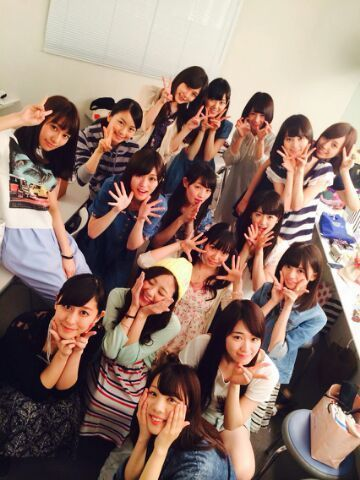
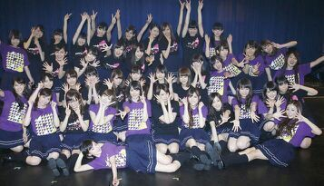

| 2014/06 17 Tue | プリンシパル終了イタシました。 /// まに♪♪ |
こんにちわ。
３年目、プリンシパル公演が無事に終了致しましたーーーわー＼(*´▽`*)／
応援してくださったファンの皆様 本当に本当に本当にありがとうございました !!!
お花やプレゼントもちゃんと見ましたよ

ありがとう、嬉しゅうキモチ..*
そして今回のプリンシパルの監督をやってくださった、、、《 福田雄一さん 》超!お忙しい中面白い台本をたくさん書いてくださり本当にありがとうございました !!
私たちのために一生懸命動いてくれたスタッフさん一同 ! ! ! 本当にありがとうございました !!!
そして、仕事の合間をぬって来てくださった バナナマンの日村さん・設楽さん、イジリー岡田さん、渡辺麻友さん、宮澤佐江さん等 たくさんの方が来てくださいました^^
ありがとうございます。
ちなみに、日村さんが来た日に 主役のポリン姫を、イジリーさんが来たときにエルザをできました
 嬉しゅうキモチやね !!
嬉しゅうキモチやね !!
今回のプリンシパルをもって一旦休業する生ちゃん、 お疲れ様やよ^^ 学業ファイトだぞ

そして乃木坂46に兼任して早速プリンシパルとゆう過酷な舞台に参加してくださった松井玲奈さん、いつも優しく接してくださりありがとうございます。プリンシパルを通しれなさんから見習わなければいけないこともたくさんありました。
すみません。書きたいことがあり過ぎて思ったことをつらつらと書いていっているので、まとまりのないblogになっているかもしれませんが、許してにゃん。
２週間 同じ楽屋でお世話になった小娘達。

メンバーの笑顔に助けられた。
辛い時は隣の椅子のちーずーじょーさん,あすか,ひめか等...にちょっかいかけて元気もらいました*^^*
とりあえず楽屋だけでも落ち着く場所にしようと思って、この楽屋だけ ライトを白からオレンジに変えていいムードにしたりもしました。
でもえりかがまだムードが足りない、アロマたこう(笑)って言い出したり、 どーにかこーにか皆で 今年も辛かったプリンシパルを乗り越えることができました*^^*
私はよく勝手なイメージだけで勘違いされますけど こう見えて真面目な人間です。
演技苦手ぢゃないし 腹筋バキバキでもありませんよ 笑!
本当に ! こう見えてけっこう女の子。
だから ポリん姫のへそだしの衣装はちょっと恥ずかしかった*´▽`)
今回のプリンシパルは、10役覚たけど、ポリン姫とエルザ役しかできなかったです..*
2幕の稽古をずっとやってきて、でもそれを発揮するには１幕のコントで選ばれないといけなかった、、、
選ばれなかったときに楽屋に戻りモニターで2幕を見てるときは、「自分の方がいっぱい練習してきたのになぁ〜、セリフも段取りも間違えないのにな〜」って思っちゃう日もありました。
でも 今は思うように結果がでないかもしれないけど、いつかきっと結果がついてくる！って信じて信じて 最後までやりきることができました。
3幕でろってぃーコールを聞くだけで気持ちがスーっと楽になりました..*
毎日、blogのコメントの皆からの応援メッセージを読むのが励みになっていました。 ありがとう

千秋楽の幕が下りて すぐ撮った写真..*
私は、右下。

プリンシパルお疲れ様でした\☆/
のし。ろってぃー
コメント(222)
2014/06/17 12:00